Brylie Wilson. Designer, strategist and chronic over-thinker, systems thinker.
Work
01 CYPHER Magazine & typographic style guideEditorial design · Image manipulation · Typography · Art direction 2024
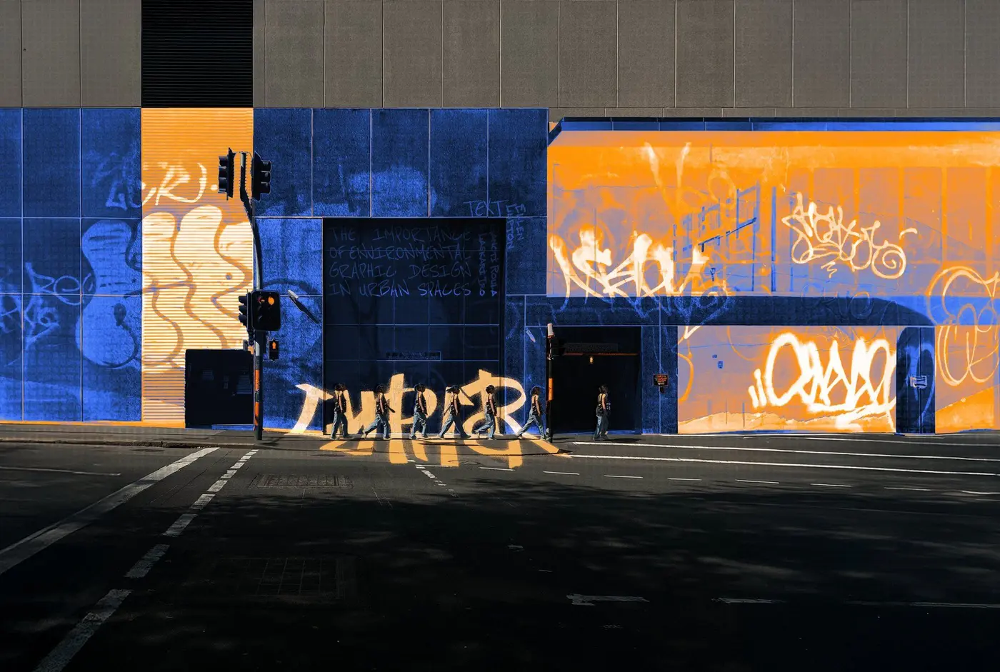
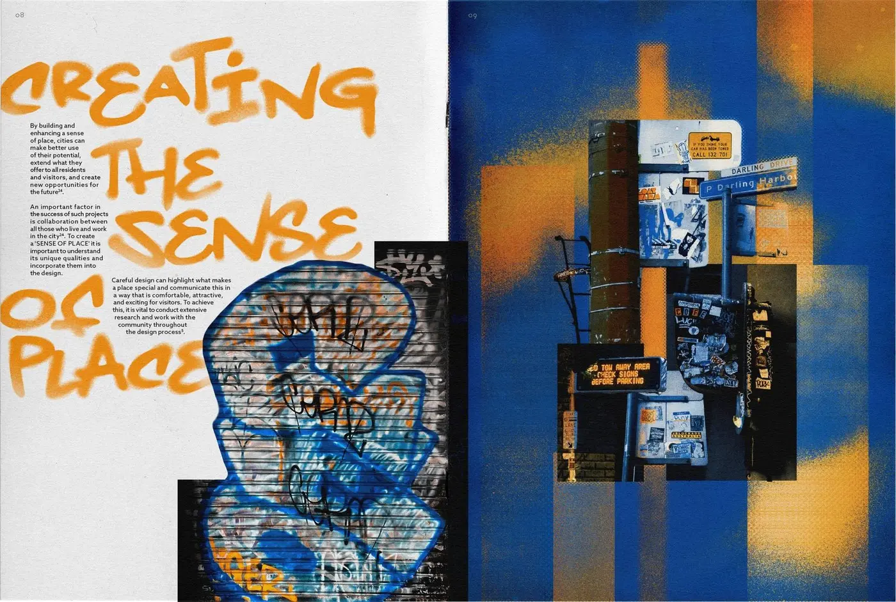
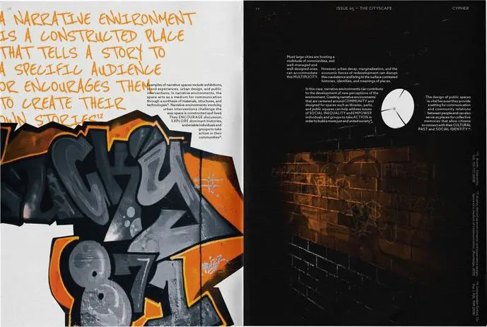
Brief
A uni assignment for Typography in Context: a magazine for visual communication designers, with masthead, covers and a style guide.
Insight
While organising my photographs into sections, I realised there was a cohesive colour scheme that heavily contrasted against the mundane urban landscape surrounding it.
Tags are acts of resistance to the increasing standardisation of urban environments.
Design response
I colour-graded my photos and masked the backgrounds to enhance this contrast. One spot colour per spread gives the range of street art without clashing, on a grid deliberately broken in key moments, where imposed order coexists with graffiti.
INDESIGN / PHOTOSHOP / PROCREATE / PHOTODOCUMENTATION
02 16 Days of Real Talk Conversation cards & a campus campaignDesign research · Workshop facilitation · Typography · Web design & build 2025
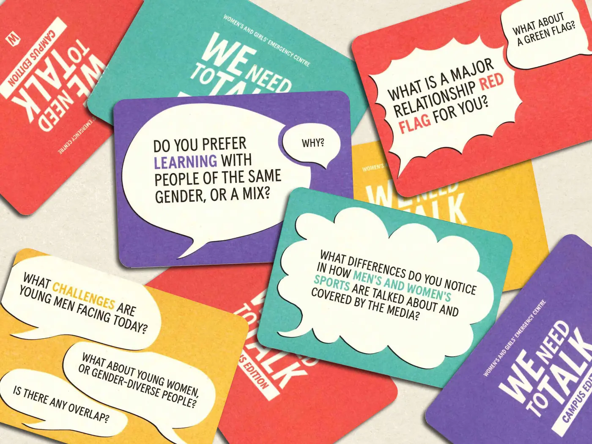
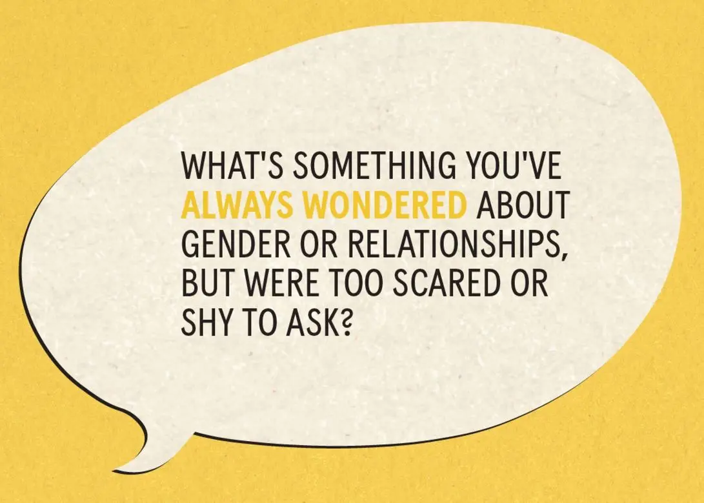
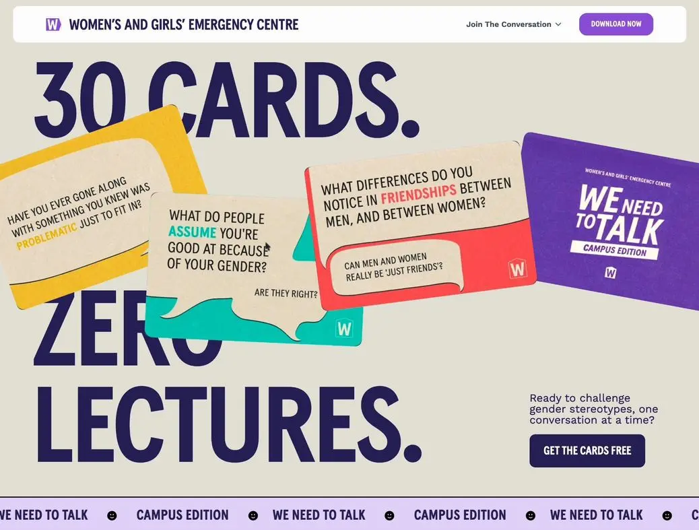
Brief
A live client project for Socially Responsive Design at UTS. The Women’s and Girls’ Emergency Centre (WAGEC) asked our studio to launch its We Need To Talk cards to university students during the 16 Days of Activism against gender-based violence.
Insight
Almost half the students we surveyed had seen or experienced sexism at uni in the past year.
Design response
We redesigned the deck as 30 pocket-sized cards, colour-coded by topic so students choose how deep to go. We used speech bubbles as the main device to show that not every opinion has to be fully formed to be part of the conversation.
I worked on research and positioning, project management and the kickoff workshop, and designed and built the landing page in Webflow.
FIGMA / MIRO / WEBFLOW / SURVEYS
03 Symbiosis Immersive installation concept for the Powerhouse MuseumExperience design · Design research · Prototyping · Creative code 2024
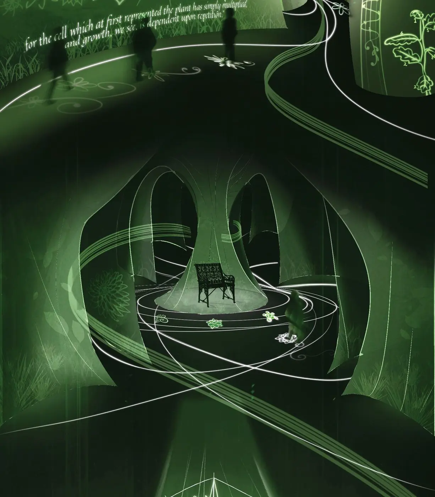
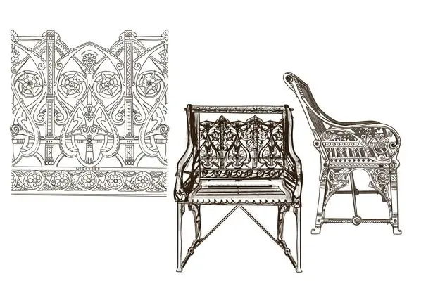
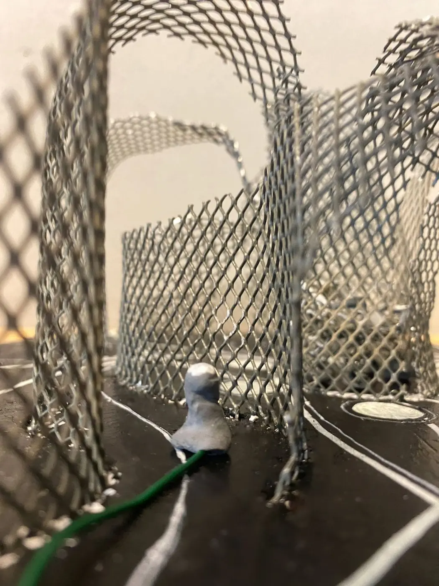
Brief
A university assignment for Visualising Experience at UTS, working with the Powerhouse Museum collection: design an interactive digital experience for one object. I chose Christopher Dresser’s cast-iron Garden Chair, 1870.
Insight
We see the chair as either a utilitarian object or a piece of art. Reading Dresser’s own books, I found that division reflects design for standardisation rather than an intrinsic truth, and that his ornament is built on botany and geometry.
Design response
Symbiosis is an immersive installation inspired by Dresser’s philosophy that true appreciation of beauty arises from contextual knowledge and understanding.
It uses the Garden Chair to critique the arbitrary homogenisation of everyday objects. Visitors enter through mesh pathways with projections on the walls and floor, and symbols around the chair light up the principles hidden in its design.
PROCREATE / ILLUSTRATOR / P5.JS & ML5 / TEACHABLE MACHINE / WIZARD OF OZ TESTING
Extras
E1 IBM × QT Hotels Problem-defining workshopIndustry brief · Design Practice, UTS 2025
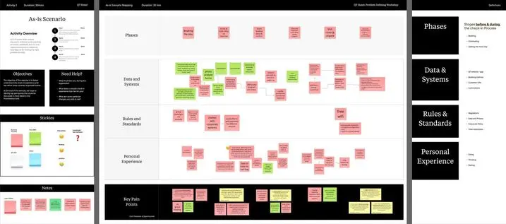
An hour on Zoom and Miro with QT stakeholders, from front desk to CEO, to find where AI could help check-in.
Team of 4. I designed the board system and agenda, co-facilitated the workshop and presented the playback.
MIRO
E2 COLLAB Event identity & stage conceptJack Morton × Figma · Industry brief · Design Practice, UTS 2025
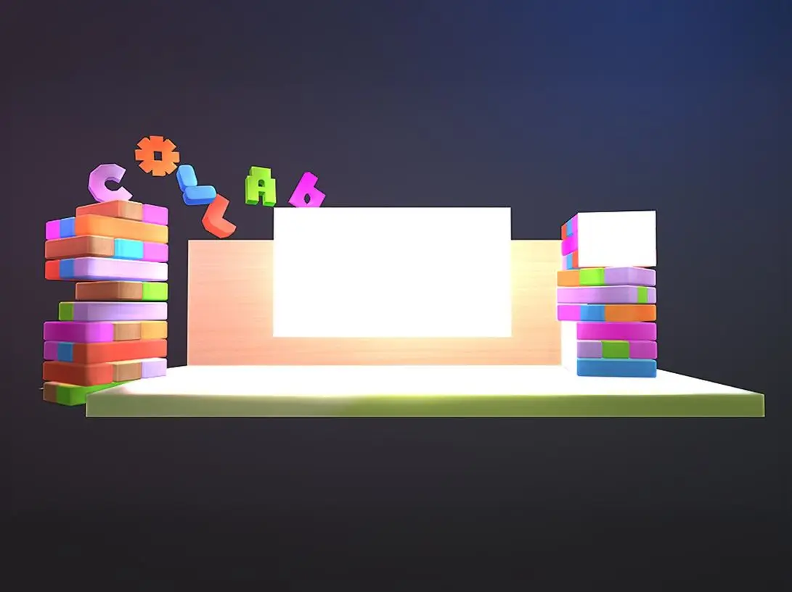
Play, Powered moves away from the high-tech look commonly associated with AI to show the childlike curiosity that emerges when AI handles the mundane routine tasks.
Jack Morton brief for Figma’s COLLAB event.
E3 ADHD in the Media Research-led motion explainerContexts of Visual Communication, UTS · Studio brief 2024
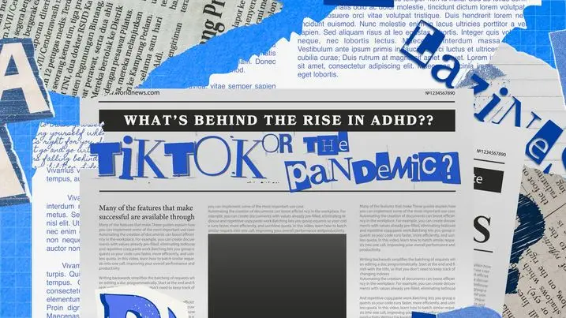
A feminist explainer on gender bias in ADHD research and diagnosis.
STOP-MOTION COLLAGE
E4 Terms of Practice Manifesto website for digital designersResearch Through Design, UTS · Studio brief 2026
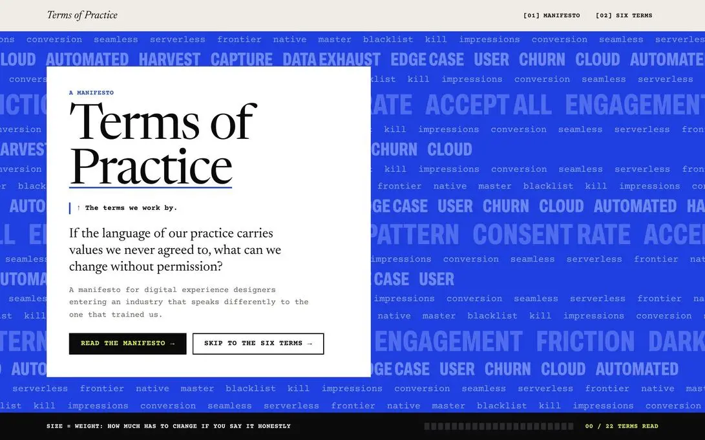
A manifesto for digital experience designers entering an industry that speaks differently to the one that trained us.
CLAUDE CODE I built my wireframe into the live site with AI. bryliejw.github.io/terms-of-practice-manifesto
E5 Audio-reactive visual exploration Creative technologySelf-directed 2026
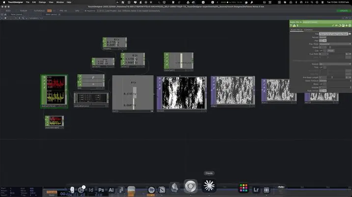
Teaching myself TouchDesigner, building noise visuals that respond to sound in real time.
TOUCHDESIGNER Audio in, noise and edge operators.
About
I’m in my element at the start of a project, working out what the problem actually is.
I research the whole system around a brief, including the people, culture, platforms, social context and politics involved, then translate it into a strategy and something people can see and use. That might be editorial, a campaign, an installation or a digital experience, whichever medium suits the concept best.
I’m drawn to small, values-aligned teams, non-profits, community organisations and civic tech, and to research-led roles where I can keep asking who, what, where, why, and who’s missing.
Having too many tabs open is my specialty
Neutral is a position that declines to be named.
Education
Bachelor of Design (Visual Communication)
University of Technology Sydney · 2023–2026
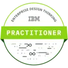
Certification IBM Enterprise Design Thinking Practitioner IBM · 2025 Verify on CredlyExperience
- 2023–26
- Freelance designerThe LBW Trust 20th Anniversary Gala identity, comms and event collateral (2026). Ashham Agencies and Ashham Advisory identity and marketing (2024)
- 2025
- Asterisk Studios × WAGECLive client campaign via UTS Shopfront. Research, positioning, project management, card typography and layout, landing page design and Webflow build, reels creative direction
- 2025
- IBM × QT HotelsGroup workshop. I designed the Miro board system and agenda, co-facilitated the workshop and presented the playback
- 2025
- Jack Morton × Figma COLLABBrand experience brief, re-brief and research
- 2025
- ServiceRocketTechnologies Reimagined systems mapping brief
- 2024
- Powerhouse MuseumVisualising Experience installation brief
Tools
InDesign · Illustrator · Photoshop · After Effects · Premiere Pro · Lightroom · Figma · Webflow · HTML/CSS/JS · p5.js & ml5 · TouchDesigner · Miro · Notion · Claude · Perplexity